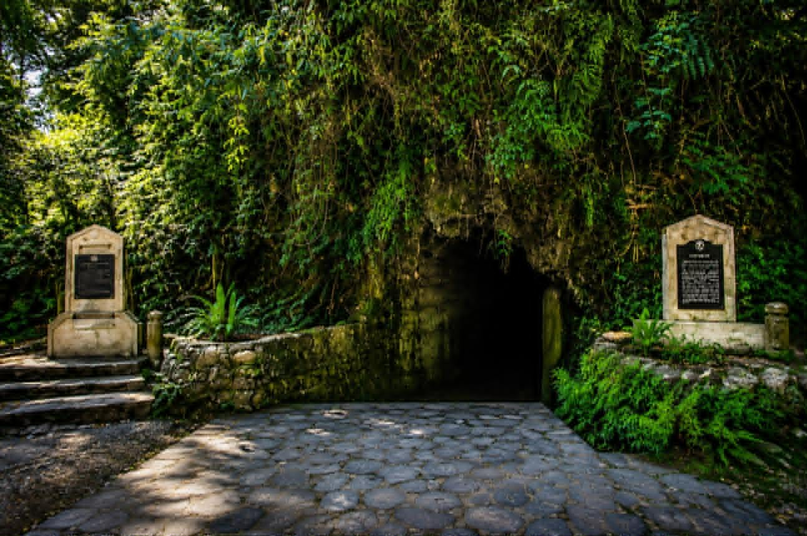
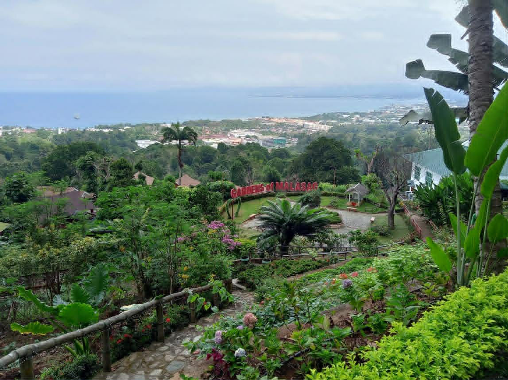
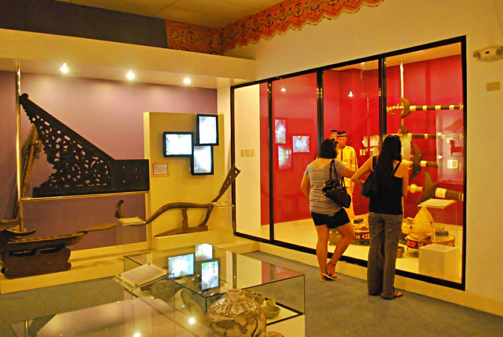
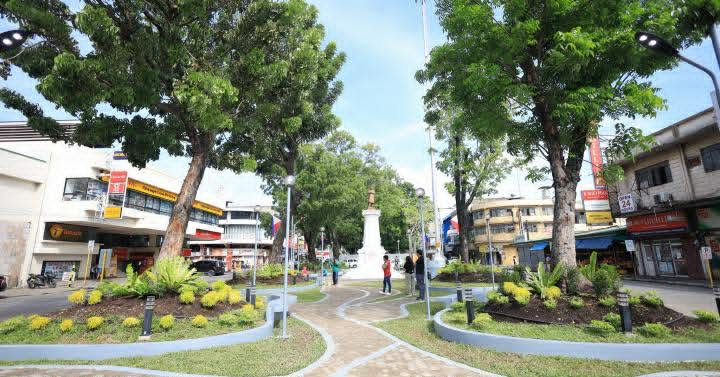
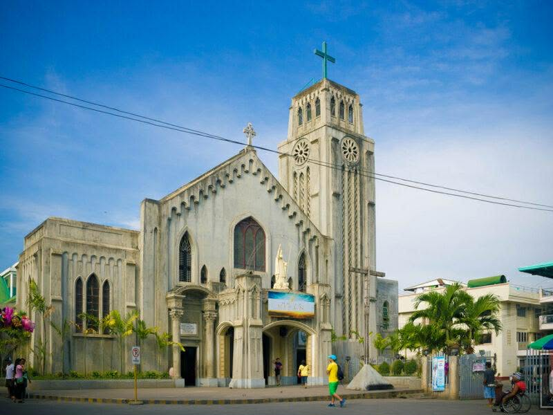

Barangay Carmen
TOURIST ATTRACTION
Cagayan de Oro, known as the City of Golden Friendship, is a gateway to adventure, culture, and natural beauty. From thrilling white-water rafting and scenic waterfalls to historical landmarks, museums, and eco-tourism destinations, the city offers memorable experiences for visitors of all ages.
ATTRACTION
Discover the beauty, culture, and peaceful environment of Barangay Carmen.
Explore tourist attractions, local destinations, and community events.

Amaya View is a scenic hilltop destination in Cagayan de Oro that offers breathtaking city views, outdoor activities, and relaxing dining experiences.

Macahambus Cave is a historic natural cave known for its role in the Battle of Macahambus and its unique limestone formations.

The Garden of Malasag is a nature park that showcases lush gardens, cultural attractions, and panoramic views of Cagayan de Oro.

The Museum of Three Cultures preserves and exhibits the rich history, traditions, and heritage of the Lumad, Muslim, and Christian communities in Mindanao.

Plaza Divisoria is a popular public park and gathering place in the heart of Cagayan de Oro, surrounded by shops, restaurants, and historical landmarks.

St. Augustine Metropolitan Cathedral is one of the city's oldest and most important Catholic churches, recognized for its beautiful architecture and religious significance.